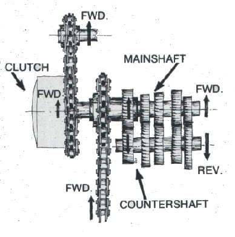
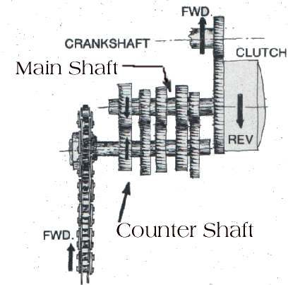

The primary drive carries power from the crankshaft to the clutch. It is a small gear (pinion) on the crankshaft that meshes with the large gear on the outside of the clutch basket, or a short chain between two sprockets. The gearbox sits after the clutch.
What it does
The primary drive does the first reduction of engine speed and feeds the clutch. From the clutch, power goes to the gearbox main shaft and then to the countershaft and the final drive (chain or shaft). Because the clutch basket is always turning with the engine, the primary drive turns whenever the engine runs.
On some engines the kickstarter also works through the primary drive. A small pinion on the clutch basket is turned by an idler gear from the kickstart shaft, so the engine can be kicked over even in gear with the clutch lever pulled. On other engines the kickstart power goes through the gearbox and the clutch plates, which means the clutch must be engaged to kick the engine over. To find out which type you have, hold the clutch lever in, select gear and kick: if the engine turns, it is the primary-drive type.
Signs it is worn or failing
- Whine or rattle from the clutch side that is present whether or not the lever is pulled.
- Clatter at idle that goes away as revs rise: clutch noise.
- Metal particles in the oil. A worn chain may also stretch and slap.
- Kickstart slips or is very hard because teeth are chipped: Kickstarter slips.
When to replace it
Replace a gear with chipped, hooked or broken teeth. Replace a primary chain that is stretched or tight in places. If one gear of a pair is damaged, check its mate and replace both when the wear is similar.
What to match when buying
- Engine model and year, number of teeth on both gears, and chain pitch and number of links for chain types.
- The crank gear may be sold with a key and a nut. Buy new if they are damaged.
Fitting notes
- Workshop job. The engine side cover must come off, and often the clutch basket too.
- Mark or note any alignment marks on gear faces (some kickstart parts also have punch marks).
- Use new gaskets and refill the oil at the end. See Inspect and replace clutch plates and springs.